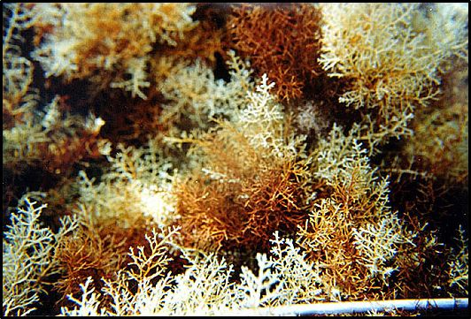
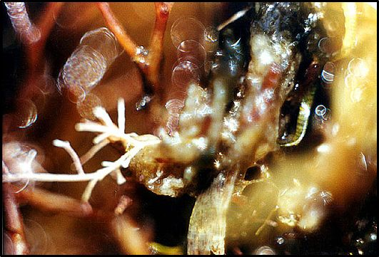

Είναι μια μεγάλη ομάδα φυτών που περιλαμβάνει εξελικτικά κατώτερους οργανισμούς. Τα φύκη χωρίζονται σε δύο κατηγορίες, τα μικροφύκη και τα μακροφύκη
1. Μικροφύκη ή Φυτοπλαγτό
Είναι μικροσκοπικά μονοκύτταρα φύκη που ζουν σε αιώρηση μέσα στο νερό και μεταφέρονται παθητικά από τα κύματα και τα ρεύματα. Ζουν σε ανώτερα στρώματα, εκεί που η ακτινοβολία είναι αρκετή για να μπορούν να φωτοσυνθέσουν.
Το φυτοπλαγκτόν περιλαμβάνει μεγάλες οικογένειες από διάτομα, μαστιγοφόρα, πρωτόζωα, νικτυλύκες και πολλούς άλλους μικροοργανισμούς.
Σπουδαία θέση στα πλαγκτονικά φυτά έχουν τα διάτομα και τα δινοφύκη. Τα διάτομα (δια+τέμνω), όταν χωριστούν στα δύο, πολλαπλασιάζονται με πολύ μεγάλη ταχύτητα σε μεγάλους αριθμούς. Σε πληθυσμιακές εξάρσεις, χρωματίζουν το θαλασσινό νερό (ερυθρές παλίρροιες). Ορισμένα δινοφύκη, παράγουν τοξίνες που μπορεί να φτάσουν στον άνθρωπο μέσω της τροφικής αλυσίδας, με την κατανάλωση οστρακοειδών.
Τα μαστιγοφόρα, όπως και οι νικτυλύκες, είναι απλοί ολοκληρωμένοι μονοκύτταροι οργανισμοί. Οι νικτυλύκες και άλλα φωσφορίζοντα μικροζωντανά, όπως τα πυροσώματα, κολυμπάνε σε πυκνά στρώματα στην επιφάνεια της θάλασσας και την κάνουν να φωσφορίζει τις καλοκαιρινές νύχτες.
2. Μακροφύκη
Τα μακροφύκη είναι πολυκύτταρα φύκη, τα περισσότερα από τα οποία ζουν προσκολλημένα στον πυθμένα. Το μέγεθός τους φθάνει μέχρι και τα δύο μέτρα. Στη Μεσόγειο έχουν αναφερθεί 1000 είδη μακροφυκών.
Τα μακροφύκη χωρίζονται σε τρεις μεγάλες κατηγορίες, τα χλωροφύκη, τα φαιοφύκη και τα ροδοφύκη.
2.1 Χλωροφύκη
Τα χλωροφύκη (ραδίκια του ψαρά), ξεχωρίζουν από το έντονο πράσινο χρώμα τους, το οποίο οφείλεται στις φωτοσυνθετικές χρωστικές (χλωροφύλλες α και β). Ζουν προσκολλημένα στον πυθμένα. Το πιο γνωστό είδος είναι το μαρούλι της θάλασσας (Ulva spp.), το οποίο το βλέπουμε συχνά σε κόλπους με ρύπανση.
2.2 Φαιοφύκη
Τα φαιοφύκη έχουν καφεκίτρινο χρώμα. Το χρώμα τους αυτό οφείλεται στη σύνθεση των χρωστικών τους (ξανθοφύλλες και καροτένια). Χαρακτηριστικές είναι οι φυτοκοινωνίες του φαιοφύκους Cystoseira (μικροί καφέ θάμνοι), οι οποίες φιλοξενούν μεγάλο αριθμό οργανισμών. Πολλά παράγωγα των φαιοφυκών αποτελούν συστατικά των τροφίμων ή χρησιμοποιούνται σε φάρμακα και καλλυντικά.
2.3 Ροδοφύκη
Τα ροδοφύκη έχουν έντονο κόκκινο χρώμα, που οφείλεται στις φωτοχρωστικές φυκοερυθρίνη και φυκοκυανίνη. Τα ροδοφύκη συναντώνται σε μεγάλα βάθη καθώς επίσης και μέσα σε σπήλαια.
Ορισμένα παράγωγά τους χρησιμοποιούνται στην βιομηχανία τροφίμων, φαρμάκων και καλλυντικών, ενώ κάποια είδη αποτελούν βασική τροφή κυρίως στις χώρες της Ανατολής.